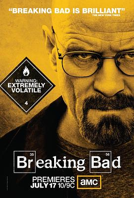

绝命毒师 第四季 / Breaking Bad Season 4
又名：制毒师 第四季 / 超越罪恶 第四季 / 绝命毒师 第四季
精彩！怎么看都是完结篇，不知道第五季还有啥。话说回来这季结束感觉cook了那么多最后只得到了一个洗车店 =。=
作品信息
| 导演 | 亚当·伯恩斯坦 / 米歇尔·麦克拉伦 / 大卫·斯雷德 / 科林·巴克西 / 迈克尔·斯洛维斯 / 皮特·古尔德 / 约翰·伦克 / 泰瑞·麦克多诺 / 斯科特·怀南特 / 文斯·吉利根 |
| 编剧 | 文斯·吉利根 / 乔治·马斯塔斯 / 山姆·卡特林 / 莫伊拉·沃利-贝克特 / 托马斯·施纳泽 / 珍妮弗·哈奇森 / 皮特·古尔德 |
| 主演 | 布莱恩·克兰斯顿 / 亚伦·保尔 / 安娜·冈 / 吉安卡罗·埃斯波西托 / 鲍勃·奥登科克 |
| 类型 | 剧情 / 犯罪 |
| 制片国家/地区 | 美国 |
| 语言 | 英语 / 西班牙语 |
| 首播 | 2011-07-17(美国) |
| 季数 | 4 |
| 集数 | 13 |
| 单集片长 | 45分钟 |
| IMDb | tt1683084 |
说过什么
2020-08-30 22:19:24
看过 · 时间来自广播，短评来自标记页
精彩！怎么看都是完结篇，不知道第五季还有啥。话说回来这季结束感觉cook了那么多最后只得到了一个洗车店 =。=
2020-08-29 16:54:00
广播 · 在看
2020-08-29 15:39:38
广播 · 想看
最后一次看到是 2026-08-01T11:05:31+10:00 · 豆瓣原页